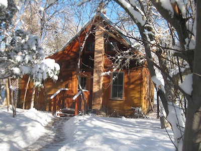
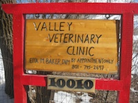
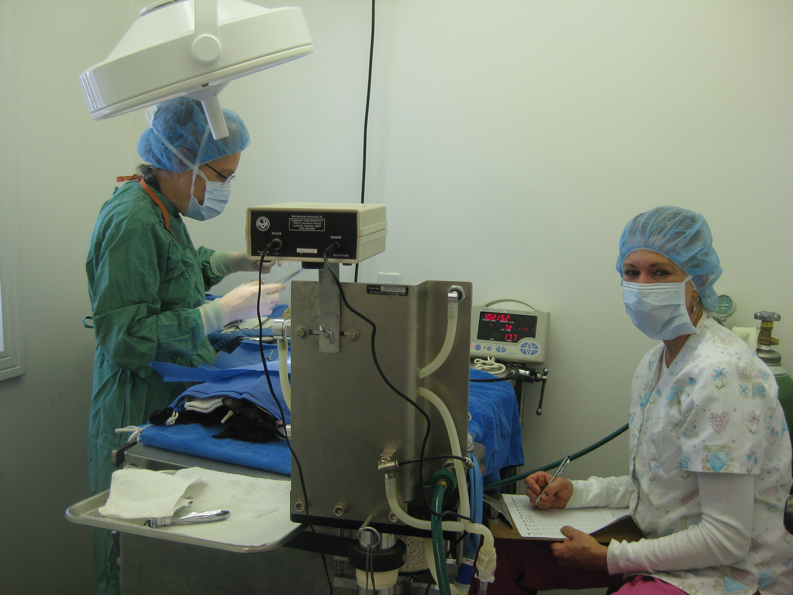

Valley Veterinary Clinic
With the retirement of Dr. Baker,
as of November 2020,
the clinic will not be taking any more appointments.
Our records have been transferred to
North Ogden Animal Hospital (801)782-4401
Driving Directions
| Services
| History
| Image gallery

Dr. Etta M. Baker, DVM
10010 E. 200 S.
Huntsville, UT 84317
(801) 745-2697
Office hours: The clinic is permanently closed.

Until closing in November 2020, the Valley Veterinary Clinic offered exams, vaccinations, and lab work
as well as medical, dental, and surgical procedures for your pet.
When you are by Huntsville at the intersection of 7800 East and 100 South, turn East on 100 South (Hwy. 39) and go 2.75 miles.
We are on the north side of the road at 10010 East.
Dr. Etta Baker graduated in 1977 from Washington State University with a Doctor's in Veterinary Medicine.
After becoming a partner in the Rollin's and Stock Veterinary Hospital in Roy Utah she opened the Clearfield Veterinary Clinic in Clearfield, Utah.
Leaving there in 1987, Dr. Baker opened the Valley Veterinary Hospital in Huntsville on the farm where she grew up.
